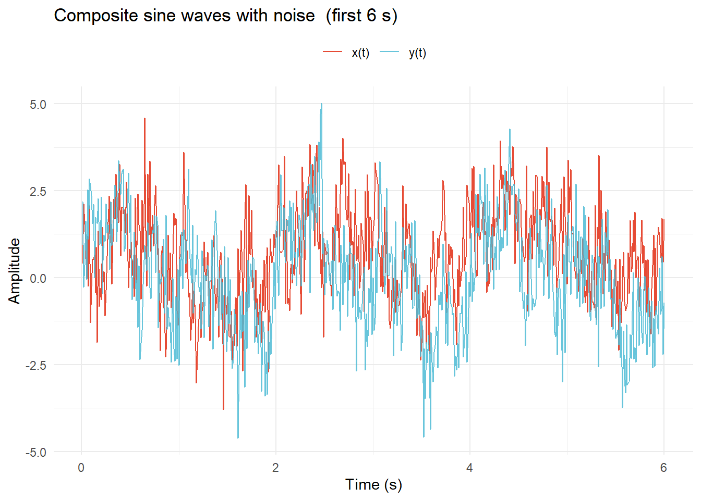
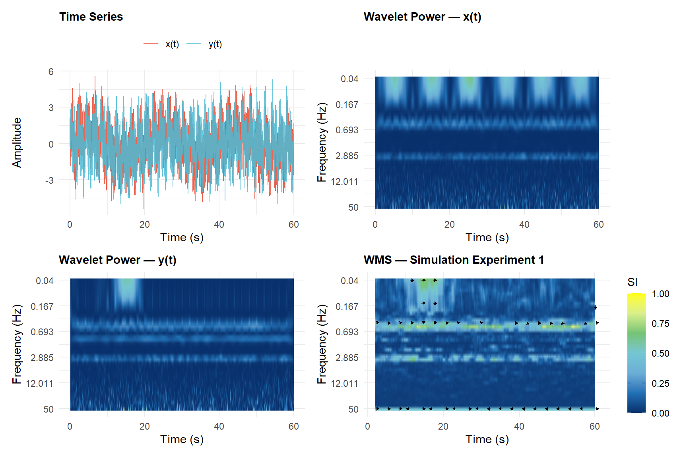
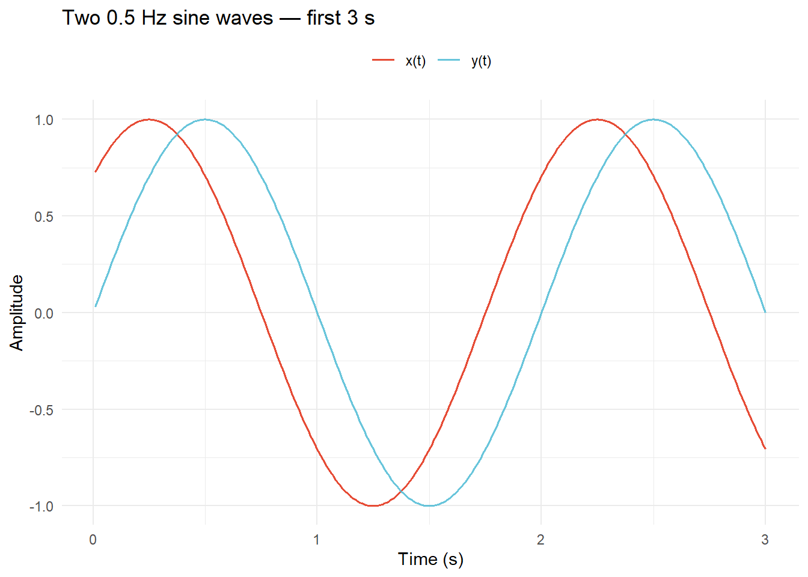
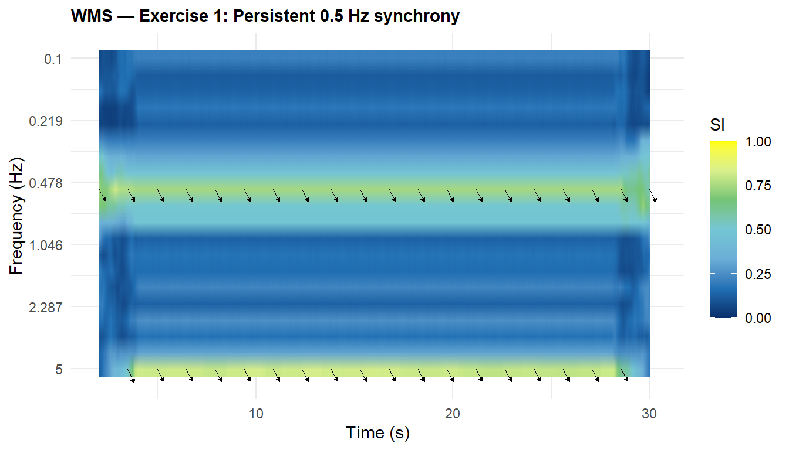
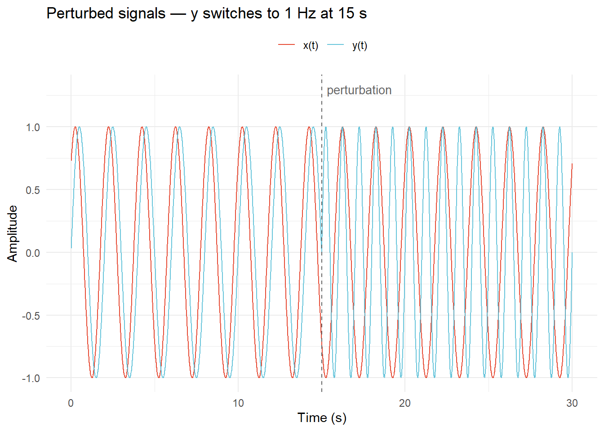
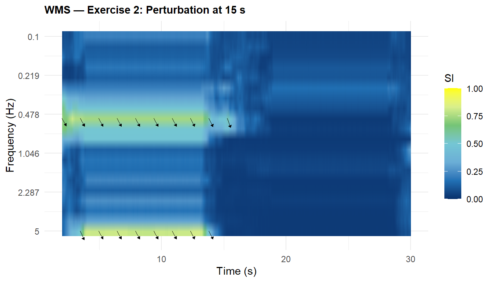
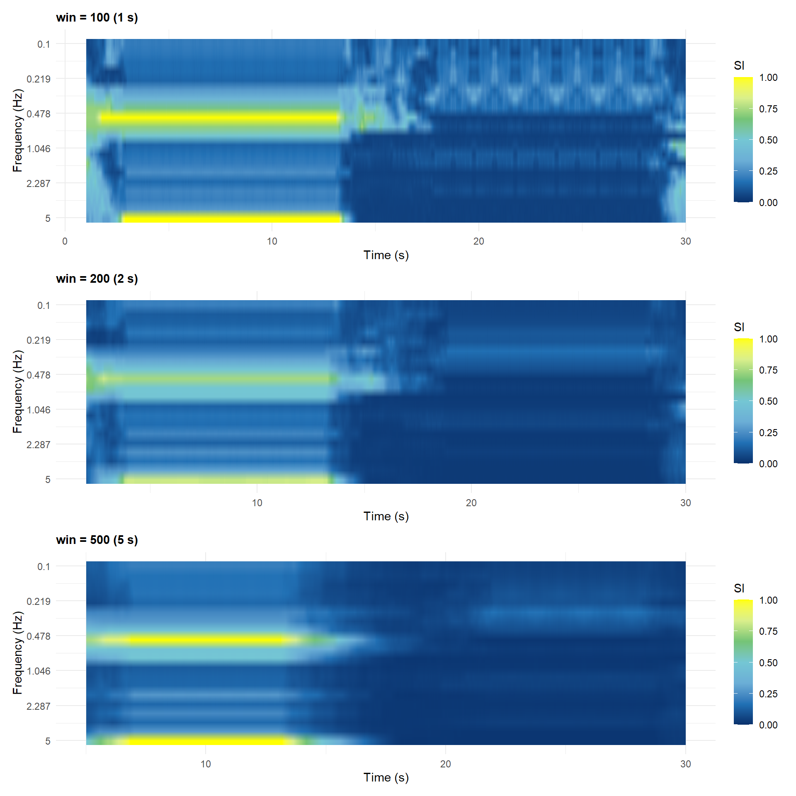
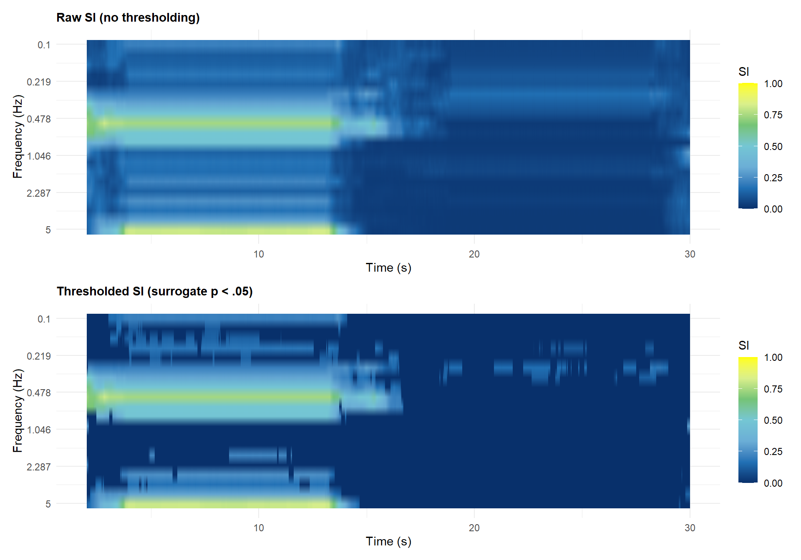

# Run this once to install the wms package from GitHub
if (!requireNamespace("remotes", quietly = TRUE)) install.packages("remotes")
remotes::install_github("travisjwiltshire/wms")WMS - Windowed Multiscale Synchrony Exercises
library(ggplot2)
library(patchwork)
library(wms)Lecture Walkthrough
This section reproduces the key WMS code from the lecture so you can follow along interactively. Work through each chunk in order before attempting the exercises.
What is WMS?
Windowed Multiscale Synchrony (WMS) quantifies phase synchronization between two signals as a continuous function of both time and frequency. It is based on Tass et al. (1998) and Le Van Quyen et al. (2001), and generalized by Likens & Wiltshire (2021).
WMS lets us ask:
- At which frequencies are two systems coordinated?
- When does that coordination emerge and dissipate?
- Is that coordination greater than expected by chance?
The core steps are:
- Decompose both signals into instantaneous phase at many frequencies using a complex Morlet wavelet
- Compute the stability of the phase difference within a sliding window at each frequency → synchrony index (SI) from 0 to 1
- Repeat across all windows → a full time × frequency SI matrix
- (Optional) Compare against a surrogate distribution to retain only statistically significant SI values
WMS Function Reference
The main function is win_ms_synch(). Here are all its arguments with annotations:
result <- win_ms_synch(
x, y, # two numeric vectors of equal length
srate = 100, # sampling rate (Hz)
win = 200, # window size (samples); >= 100 recommended
minfreq = 0.05, # minimum frequency to resolve (Hz)
maxfreq = 50, # maximum frequency (Hz); <= Nyquist (srate / 2)
mincycle = 5, # min Morlet wavelet cycles
maxcycle = 8, # max Morlet wavelet cycles
nfreqs = 40, # number of frequency bins
wavelet_length = 4 # wavelet duration (seconds)
)Key outputs from the result object:
| Field | Dimensions | Description |
|---|---|---|
$synch |
nfreqs × n_windows |
Synchrony index (SI), 0–1 |
$mean_rp |
nfreqs × n_windows |
Mean relative phase (radians) |
$wcoh |
nfreqs × n_windows |
Magnitude-squared coherence |
$freqs2use |
nfreqs |
Frequency vector (Hz) |
$time_synch |
n_windows |
Time vector for windows (s) |
Parameter guidance:
| Parameter | Role | Practical guidance |
|---|---|---|
win |
Window size (samples) | ≥ 100 pts; capture ~2–3 cycles of lowest frequency |
wavelet_length |
Wavelet duration (s) | 4 s is a robust default |
mincycle / maxcycle |
Time–frequency precision | 5–8 cycles is standard |
minfreq / maxfreq |
Frequency range analyzed | Theory-driven; maxfreq ≤ Nyquist |
nfreqs |
Frequency resolution | floor((log2(N) - 1) * 12) as auto-default |
n_surrogates |
Null distribution size | 19 for α = 0.05 (Kantz & Schreiber, 2003) |
Simulation Experiment: Building the Signals
We create two composite noisy sine waves (60 s at 100 Hz) with known shared and unshared frequency components, so we can verify that WMS recovers the correct pattern.
\[x(t) = \sin(2\pi\cdot3t + \tfrac{\pi}{3}) + \sin(2\pi\cdot0.5t) + \sin(2\pi\cdot0.05t) + \varepsilon_x\]
\[y(t) = \sin(2\pi\cdot3t) + \sin(2\pi\cdot1t) + \sin(2\pi\cdot0.5t) + \left[\sin(2\pi\cdot0.05t)\right]_{750:2050} + \varepsilon_y\]
What we expect WMS to find:
| Frequency | Shared? | Expected pattern |
|---|---|---|
| 3 Hz | Yes (phase-shifted) | Persistent synchrony throughout |
| 0.5 Hz | Yes | Persistent synchrony throughout |
| 1 Hz | No (only in y) | No synchrony |
| 0.05 Hz | Partially (y only in samples 750–2050) | Transient synchrony in that window |
set.seed(4821)
srate <- 100
t <- seq(0.01, 60, by = 1/srate) # 6000 samples
x <- sin(2*pi*3*t + pi/3) + sin(2*pi*0.5*t) +
sin(2*pi*0.05*t) + rnorm(length(t))
y <- sin(2*pi*3*t) + sin(2*pi*1*t) + sin(2*pi*0.5*t) + rnorm(length(t))
y[750:2050] <- y[750:2050] + sin(2*pi*0.05*t[750:2050])df_ts <- data.frame(t = t[1:600], x = x[1:600], y = y[1:600])
ggplot(df_ts, aes(x = t)) +
geom_line(aes(y = x, color = "x(t)"), linewidth = 0.45) +
geom_line(aes(y = y, color = "y(t)"), linewidth = 0.45, alpha = 0.85) +
scale_color_manual(values = c("x(t)" = "#E64B35", "y(t)" = "#4DBBD5"),
name = NULL) +
labs(x = "Time (s)", y = "Amplitude",
title = "Composite sine waves with noise (first 6 s)") +
theme_minimal(base_size = 11) + theme(legend.position = "top")
Running WMS
# maxfreq = 50 = Nyquist for 100 Hz data
wms_se1 <- win_ms_synch(x, y,
srate = srate,
win = 200,
minfreq = 0.04,
maxfreq = 50,
mincycle = 5,
maxcycle = 8,
nfreqs = 40,
wavelet_length = 4)Visualizing the Results
plot_wms() produces a heatmap of the SI matrix over time and frequency. Phase arrows can be overlaid to show the mean relative phase direction in each cell.
Reading the plot:
- Color (dark navy → yellow, 0–1): bright yellow = high SI → stable phase relationship at that frequency and moment; dark = no coordination
- Phase arrows: → in-phase (θ ≈ 0); ← anti-phase (θ ≈ ±π); ↑/↓ 90° lead/lag; consistent direction = stable phase relationship; variable direction = drifting phase
plot_wms(wms_se1,
layout = "2x2",
show_arrows = TRUE,
arrow_n_time = 20,
arrow_n_freq = 7,
arrow_scale = 0.35,
arrow_min_si = 0.25,
arrow_color = "black",
title_str = "WMS — Simulation Experiment 1")
WMS correctly reveals:
- Persistent high SI at 3 Hz and 0.5 Hz — shared frequencies maintain phase-locking throughout
- Transient SI at 0.05 Hz — elevated synchrony only during the perturbation window (7.5–20.5 s)
- Low SI at 1 Hz — the unmatched component in y(t) produces no lasting coordination
For comparison, the zero-lag cross-correlation between these signals is 0.333 — a single number that cannot reveal when or at which frequency coordination occurred.
Extracting Summary Statistics
After computing the SI matrix you typically need scalar summaries for statistical analysis:
# Mean SI within a frequency band
band <- which(wms_se1$freqs2use >= 0.04 & wms_se1$freqs2use <= 0.5)
# Time course at a specific frequency
hz05_idx <- which.min(abs(wms_se1$freqs2use - 0.5))
si_tc <- wms_se1$synch[hz05_idx, ]
# Peak synchrony location
pk <- which(wms_se1$synch == max(wms_se1$synch), arr.ind = TRUE)data.frame(
Extraction = c("Band (0.04–0.5 Hz)", "Frequency (~0.5 Hz)", "Peak"),
Metric = c("Mean SI", "SD of SI over time at (~0.5 Hz)", "Peak SI"),
Value = c(round(mean(wms_se1$synch[band, ]), 3),
round(sd(si_tc), 3),
round(max(wms_se1$synch), 3)),
Location = c("—", "—",
paste0(round(wms_se1$freqs2use[pk[1]], 2), " Hz @ ",
round(wms_se1$time_synch[pk[2]], 1), " s"))
) |> knitr::kable(align = "llrl")| Extraction | Metric | Value | Location |
|---|---|---|---|
| Band (0.04–0.5 Hz) | Mean SI | 0.164 | — |
| Frequency (~0.5 Hz) | SD of SI over time at (~0.5 Hz) | 0.135 | — |
| Peak | Peak SI | 0.891 | 0.52 Hz @ 2.1 s |
Surrogate Testing
Even unrelated signals produce non-zero SI values by chance. wms_surrogate() builds a data-driven null distribution by randomly shuffling the time series, computing WMS on each shuffled pair, and applying a pointwise threshold.
# Note: this is slow (19 × WMS on 6000 samples). Shown here as reference;
# see Exercise 4 for a hands-on version on shorter signals.
wms_thresh <- wms_surrogate(
x, y,
srate = srate,
win = 200,
minfreq = 0.04,
maxfreq = 50,
mincycle = 5,
maxcycle = 8,
nfreqs = 40,
wavelet_length = 4,
n_surrogates = 19, # minimum for alpha = 0.05
alpha = 0.05
)plot_wms(wms_thresh,
use_threshold = TRUE,
show_arrows = TRUE,
arrow_n_time = 20,
arrow_n_freq = 7,
arrow_scale = 0.40,
arrow_min_si = 0,
title_str = "WMS — Thresholded + Phase Arrows")⚠️ Attempt the exercises on your own before reading the solutions below.
Each exercise has a clear goal. Work through the code yourself first — even if your solution looks different, the attempt is where the learning happens. Solutions are provided after each exercise for checking your work.
Exercise 1: Basic Validation
1) Create two 0.5 Hz sine waves (100 Hz, 30 s), one shifted by π/4, and plot them
srate <- 100
t <- seq(0.01, 30, by = 1/srate) # 3000 samples
x1 <- sin(2*pi*0.5*t + pi/4) # phase-shifted by π/4
y1 <- sin(2*pi*0.5*t)
df1 <- data.frame(t = t[1:300], x = x1[1:300], y = y1[1:300])
ggplot(df1, aes(x = t)) +
geom_line(aes(y = x, color = "x(t)"), linewidth = 0.6) +
geom_line(aes(y = y, color = "y(t)"), linewidth = 0.6, alpha = 0.85) +
scale_color_manual(values = c("x(t)" = "#E64B35", "y(t)" = "#4DBBD5"),
name = NULL) +
labs(x = "Time (s)", y = "Amplitude",
title = "Two 0.5 Hz sine waves — first 3 s") +
theme_minimal(base_size = 11) + theme(legend.position = "top")
2) Run WMS on the two signals
We use a narrow frequency range (0.1–5 Hz) since we only care about the 0.5 Hz component here, keeping computation fast. Window size of 200 samples (2 s) comfortably captures several 0.5 Hz cycles.
wms_ex1 <- win_ms_synch(x1, y1,
srate = srate,
win = 200,
minfreq = 0.1,
maxfreq = 5,
mincycle = 5,
maxcycle = 8,
nfreqs = 20,
wavelet_length = 4)3) Visualize the SI surface
plot_wms(wms_ex1,
show_arrows = TRUE,
arrow_n_time = 20,
arrow_n_freq = 6,
arrow_scale = 0.35,
arrow_min_si = 0.5,
title_str = "WMS — Exercise 1: Persistent 0.5 Hz synchrony")
The heatmap shows a bright band centered at 0.5 Hz running the full length of the signal. Phase arrows point consistently in the same direction, reflecting the stable π/4 phase offset.
4) Extract scalar summaries — what to report and why
The 2D SI surface is informative visually, but for statistical analysis and reporting you need scalar summaries. Three types are most useful:
- Band mean SI collapses the time dimension within a theoretically motivated frequency band. It answers: How much synchrony was there, on average, at this scale? This is what you’d compare across dyads or conditions.
- SD of the SI time course at a target frequency captures how stable or variable synchrony was over time. A high SD means coordination fluctuated; a low SD means it was consistent. This is relevant when the temporal pattern matters (e.g., does synchrony build up or break down?).
- Peak SI and its location tells you where in time and frequency the strongest coordination occurred. Useful for confirming that the peak is where theory predicts.
- Mean relative phase tells you the direction of the phase relationship — are the signals in-phase, anti-phase, or offset? This is only meaningful when SI is high.
# Frequency band around 0.5 Hz
band <- which(wms_ex1$freqs2use >= 0.3 & wms_ex1$freqs2use <= 0.7)
# Index of the frequency bin closest to 0.5 Hz
hz05_idx <- which.min(abs(wms_ex1$freqs2use - 0.5))
# Time course of SI at ~0.5 Hz and its variability
si_tc <- wms_ex1$synch[hz05_idx, ]
# Location of peak synchrony
pk <- which(wms_ex1$synch == max(wms_ex1$synch), arr.ind = TRUE)
data.frame(
Extraction = c("Band (0.3–0.7 Hz)", "Frequency (~0.5 Hz)", "Peak", "Mean relative phase"),
Metric = c("Mean SI over time",
"SD of SI over time",
"Peak SI",
"Mean RP at ~0.5 Hz"),
Value = c(round(mean(wms_ex1$synch[band, ]), 3),
round(sd(si_tc), 3),
round(max(wms_ex1$synch), 3),
round(mean(wms_ex1$mean_rp[hz05_idx, ]), 3)),
Location = c("—", "—",
paste0(round(wms_ex1$freqs2use[pk[1]], 2), " Hz @ ",
round(wms_ex1$time_synch[pk[2]], 1), " s"),
paste0("expected: ", round(pi/4, 3), " rad (π/4)"))
) |> knitr::kable(align = "llrl")| Extraction | Metric | Value | Location |
|---|---|---|---|
| Band (0.3–0.7 Hz) | Mean SI over time | 0.518 | — |
| Frequency (~0.5 Hz) | SD of SI over time | 0.027 | — |
| Peak | Peak SI | 0.826 | 5 Hz @ 2.2 s |
| Mean relative phase | Mean RP at ~0.5 Hz | 0.786 | expected: 0.785 rad (π/4) |
The band mean SI is close to 1, confirming strong persistent synchrony at 0.5 Hz. The low SD of the time course reflects that coordination is stable throughout — it does not fluctuate. The mean relative phase closely matches the known π/4 offset, validating that WMS recovers not just the strength but also the direction of coordination.
Exercise 2: Perturbation Detection
1) Create the perturbed signal pair
After sample 1500 (the 15 s mark), replace y with a 1 Hz sine wave. This means 0.5 Hz synchrony should vanish after 15 s and no new synchrony at 1 Hz should emerge (since x contains no 1 Hz component).
x2 <- sin(2*pi*0.5*t + pi/4) # unchanged
y2 <- sin(2*pi*0.5*t)
y2[1501:length(t)] <- sin(2*pi*1*t[1501:length(t)]) # replace with 1 Hz
df2 <- data.frame(t = t, x = x2, y = y2)
ggplot(df2, aes(x = t)) +
geom_line(aes(y = x, color = "x(t)"), linewidth = 0.45) +
geom_line(aes(y = y, color = "y(t)"), linewidth = 0.45, alpha = 0.85) +
geom_vline(xintercept = 15, linetype = "dashed", color = "grey40") +
scale_color_manual(values = c("x(t)" = "#E64B35", "y(t)" = "#4DBBD5"),
name = NULL) +
annotate("text", x = 15.3, y = 1.3, label = "perturbation", hjust = 0,
size = 3.5, color = "grey40") +
labs(x = "Time (s)", y = "Amplitude",
title = "Perturbed signals — y switches to 1 Hz at 15 s") +
theme_minimal(base_size = 11) + theme(legend.position = "top")
2) Run WMS on the perturbed pair
wms_ex2 <- win_ms_synch(x2, y2,
srate = srate,
win = 200,
minfreq = 0.1,
maxfreq = 5,
mincycle = 5,
maxcycle = 8,
nfreqs = 20,
wavelet_length = 4)3) Visualize the SI surface
plot_wms(wms_ex2,
show_arrows = TRUE,
arrow_n_time = 20,
arrow_n_freq = 6,
arrow_scale = 0.35,
arrow_min_si = 0.4,
title_str = "WMS — Exercise 2: Perturbation at 15 s")
4) Extract epoch-level summaries to quantify the perturbation effect
Visual inspection of the heatmap tells us something changed at 15 s, but scalars let us quantify how much synchrony dropped and characterize each epoch separately. The key idea is to split the SI time course at the perturbation boundary and compute the same summaries from the lecture for each epoch.
We also check the 1 Hz band to confirm that the absence of a shared 1 Hz component means no new synchrony emerges after the switch — the expected SI there is near zero.
band_05 <- which(wms_ex2$freqs2use >= 0.3 & wms_ex2$freqs2use <= 0.7)
band_1 <- which(wms_ex2$freqs2use >= 0.8 & wms_ex2$freqs2use <= 1.2)
hz05_idx <- which.min(abs(wms_ex2$freqs2use - 0.5))
pre <- wms_ex2$time_synch < 15
post <- wms_ex2$time_synch >= 15
# SI time courses for each epoch
si_pre <- wms_ex2$synch[hz05_idx, pre]
si_post <- wms_ex2$synch[hz05_idx, post]
# Peak SI within each epoch
pk_pre <- which(wms_ex2$synch[, pre] == max(wms_ex2$synch[, pre]), arr.ind = TRUE)
pk_post <- which(wms_ex2$synch[, post] == max(wms_ex2$synch[, post]), arr.ind = TRUE)
data.frame(
Epoch = c("Pre (< 15 s)", "Post (≥ 15 s)", "Post — 1 Hz band"),
Extraction = c("Band mean SI (0.3–0.7 Hz)",
"Band mean SI (0.3–0.7 Hz)",
"Band mean SI (0.8–1.2 Hz)"),
`Mean SI` = c(round(mean(wms_ex2$synch[band_05, pre]), 3),
round(mean(wms_ex2$synch[band_05, post]), 3),
round(mean(wms_ex2$synch[band_1, post]), 3)),
`SD (time course at ~0.5 Hz)` = c(round(sd(si_pre), 3),
round(sd(si_post), 3),
NA),
`Peak SI @ location` = c(
paste0(round(max(wms_ex2$synch[, pre]), 3), " @ ",
round(wms_ex2$freqs2use[pk_pre[1]], 2), " Hz"),
paste0(round(max(wms_ex2$synch[, post]), 3), " @ ",
round(wms_ex2$freqs2use[pk_post[1]], 2), " Hz"),
"—"),
check.names = FALSE
) |> knitr::kable(align = "llrrr")| Epoch | Extraction | Mean SI | SD (time course at ~0.5 Hz) | Peak SI @ location |
|---|---|---|---|---|
| Pre (< 15 s) | Band mean SI (0.3–0.7 Hz) | 0.495 | 0.082 | 0.826 @ 5 Hz |
| Post (≥ 15 s) | Band mean SI (0.3–0.7 Hz) | 0.093 | 0.113 | 0.554 @ 0.52 Hz |
| Post — 1 Hz band | Band mean SI (0.8–1.2 Hz) | 0.050 | NA | — |
WMS cleanly detects the perturbation: band mean SI at 0.5 Hz drops sharply after 15 s. The SD of the pre-perturbation time course is low (stable synchrony), while the post-perturbation SD reflects noisy, unsynchronized phase. SI in the 1 Hz band remains near zero throughout — no coordination emerges at that scale because x contains no 1 Hz component.
Exercise 3: Parameter Sensitivity
1) Vary win (100, 200, 500) and run WMS each time on the perturbed signal pair
Note: a window of 100 samples is at the recommended lower bound for reliable entropy estimates; 500 samples (5 s) approaches the duration of each epoch.
wms_w100 <- win_ms_synch(x2, y2, srate = srate, win = 100,
minfreq = 0.1, maxfreq = 5,
mincycle = 5, maxcycle = 8,
nfreqs = 20, wavelet_length = 4)
wms_w200 <- win_ms_synch(x2, y2, srate = srate, win = 200,
minfreq = 0.1, maxfreq = 5,
mincycle = 5, maxcycle = 8,
nfreqs = 20, wavelet_length = 4)
wms_w500 <- win_ms_synch(x2, y2, srate = srate, win = 500,
minfreq = 0.1, maxfreq = 5,
mincycle = 5, maxcycle = 8,
nfreqs = 20, wavelet_length = 4)2) Plot and compare the three window sizes
p_w100 <- plot_wms(wms_w100, title_str = "win = 100 (1 s)")
p_w200 <- plot_wms(wms_w200, title_str = "win = 200 (2 s)")
p_w500 <- plot_wms(wms_w500, title_str = "win = 500 (5 s)")
p_w100 / p_w200 / p_w500
3) Extract and compare summaries across window sizes
You will notice that WMS results look different across window sizes, but how different are the scalar summaries? Extracting the same metrics for each window size makes the trade-off concrete and quantifiable. The key questions are:
- Does the band mean SI stay consistent, or does it depend heavily on
win? A robust measure should not change much — if it does, your estimates may be unreliable. - Does the SD of the time course change with window size? Larger windows smooth over fluctuations, so you would expect SD to decrease as
winincreases. - Does the pre/post contrast (the signal of interest) shrink or blur with larger windows? This is the trade-off: larger
win→ more stable SI estimate, but reduced sensitivity to transitions.
band_05 <- which(wms_w100$freqs2use >= 0.3 & wms_w100$freqs2use <= 0.7)
do.call(rbind, lapply(list(wms_w100, wms_w200, wms_w500), function(obj) {
fi <- which.min(abs(obj$freqs2use - 0.5))
pre <- obj$time_synch < 15
post <- obj$time_synch >= 15
pk <- which(obj$synch == max(obj$synch), arr.ind = TRUE)
data.frame(
`win (s)` = paste0(obj$win, " (", obj$win / srate, " s)"),
`Band mean SI — pre` = round(mean(obj$synch[band_05, pre]), 3),
`Band mean SI — post`= round(mean(obj$synch[band_05, post]), 3),
`Pre/post contrast` = round(mean(obj$synch[band_05, pre]) -
mean(obj$synch[band_05, post]), 3),
`SD of SI (pre)` = round(sd(obj$synch[fi, pre]), 3),
`SD of SI (post)` = round(sd(obj$synch[fi, post]), 3),
`Peak SI @ location` = paste0(round(max(obj$synch), 3), " @ ",
round(obj$freqs2use[pk[1]], 2), " Hz, ",
round(obj$time_synch[pk[2]], 1), " s"),
check.names = FALSE
)
})) |> knitr::kable(align = "lrrrrrr")| win (s) | Band mean SI — pre | Band mean SI — post | Pre/post contrast | SD of SI (pre) | SD of SI (post) | Peak SI @ location |
|---|---|---|---|---|---|---|
| 100 (1 s) | 0.660 | 0.160 | 0.500 | 0.129 | 0.133 | 1 @ 0.52 Hz, 1.1 s |
| 200 (2 s) | 0.495 | 0.093 | 0.402 | 0.082 | 0.113 | 0.826 @ 5 Hz, 2.2 s |
| 500 (5 s) | 0.527 | 0.078 | 0.449 | 0.111 | 0.132 | 1 @ 5 Hz, 5.2 s |
Interpretation: Smaller windows (win = 100) give sharper temporal resolution — the drop in SI at 15 s appears as a crisp boundary — but the SI estimate itself is noisier (higher SD) because the entropy calculation relies on fewer phase samples. Larger windows (win = 500) yield smoother SI values (lower SD) but reduce the pre/post contrast as the window “straddles” the change point. With win = 500, it takes up to 5 s after the perturbation for the window to fill entirely with post-perturbation data, smearing the boundary. The perturbation remains detectable at all window sizes, but the contrast is sharpest at win = 100.
Exercise 4 (Challenge): Surrogate Testing
1) Run wms_surrogate() with n_surrogates = 19 on the perturbed signal pair
This computes 19 randomly shuffled surrogate pairs and applies a pointwise 95th-percentile threshold to the observed SI surface.
set.seed(3819)
wms_ex4 <- wms_surrogate(x2, y2,
srate = srate,
win = 200,
minfreq = 0.1,
maxfreq = 5,
mincycle = 5,
maxcycle = 8,
nfreqs = 20,
wavelet_length = 4,
n_surrogates = 19,
alpha = 0.05)2) Compare the raw and thresholded SI plots
p_raw <- plot_wms(wms_ex4, use_threshold = FALSE,
title_str = "Raw SI (no thresholding)")
p_thresh <- plot_wms(wms_ex4, use_threshold = TRUE,
title_str = "Thresholded SI (surrogate p < .05)")
p_raw / p_thresh
3) Extract and compare summaries from raw vs thresholded matrices
Why does this matter? The raw SI matrix includes values that could easily arise from unrelated signals — they are statistical noise, not coordination. When you extract scalar summaries for reporting or downstream analysis (e.g., correlating synchrony with performance), you should extract them from $synch_thresh, not $synch. Doing so on the raw matrix inflates your synchrony estimates, especially in epochs where no real coordination exists.
The key question: how much does extracting from the thresholded matrix change your conclusions? If the pre-perturbation epoch is genuinely synchronized, its summaries should be largely unchanged after thresholding. If the post-perturbation epoch has only chance-level SI, its thresholded summaries should collapse toward zero.
band_05 <- which(wms_ex4$freqs2use >= 0.3 & wms_ex4$freqs2use <= 0.7)
hz05_idx <- which.min(abs(wms_ex4$freqs2use - 0.5))
pre <- wms_ex4$time_synch < 15
post <- wms_ex4$time_synch >= 15
data.frame(
Epoch = rep(c("Pre (< 15 s)", "Post (≥ 15 s)"), times = 2),
Matrix = rep(c("Raw `$synch`", "Thresholded `$synch_thresh`"), each = 2),
`Band mean SI` = c(round(mean(wms_ex4$synch[band_05, pre]), 3),
round(mean(wms_ex4$synch[band_05, post]), 3),
round(mean(wms_ex4$synch_thresh[band_05, pre]), 3),
round(mean(wms_ex4$synch_thresh[band_05,post]), 3)),
`SD (time course ~0.5 Hz)` = c(
round(sd(wms_ex4$synch[hz05_idx, pre]), 3),
round(sd(wms_ex4$synch[hz05_idx, post]), 3),
round(sd(wms_ex4$synch_thresh[hz05_idx, pre]), 3),
round(sd(wms_ex4$synch_thresh[hz05_idx,post]), 3)),
`% windows > 0` = c(
"—", "—",
paste0(round(mean(wms_ex4$synch_thresh[hz05_idx, pre] > 0) * 100, 1), "%"),
paste0(round(mean(wms_ex4$synch_thresh[hz05_idx, post] > 0) * 100, 1), "%")),
check.names = FALSE
) |> knitr::kable(align = "llrrr")| Epoch | Matrix | Band mean SI | SD (time course ~0.5 Hz) | % windows > 0 |
|---|---|---|---|---|
| Pre (< 15 s) | Raw $synch |
0.495 | 0.082 | — |
| Post (≥ 15 s) | Raw $synch |
0.093 | 0.113 | — |
| Pre (< 15 s) | Thresholded $synch_thresh |
0.494 | 0.082 | 100% |
| Post (≥ 15 s) | Thresholded $synch_thresh |
0.028 | 0.120 | 10.7% |
Interpretation: The vast majority of pre-perturbation SI values at 0.5 Hz survive the surrogate threshold, confirming that the observed synchrony is well above what would be expected from unrelated signals — band mean SI barely changes between raw and thresholded matrices. After the perturbation, the thresholded band mean drops sharply toward zero, and the proportion of surviving windows is near the α = 0.05 false-positive rate. This demonstrates the key role of surrogate testing: without it, the residual post-perturbation SI could be misread as weak coordination when it is statistical noise.